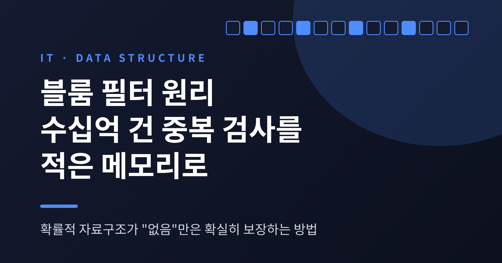
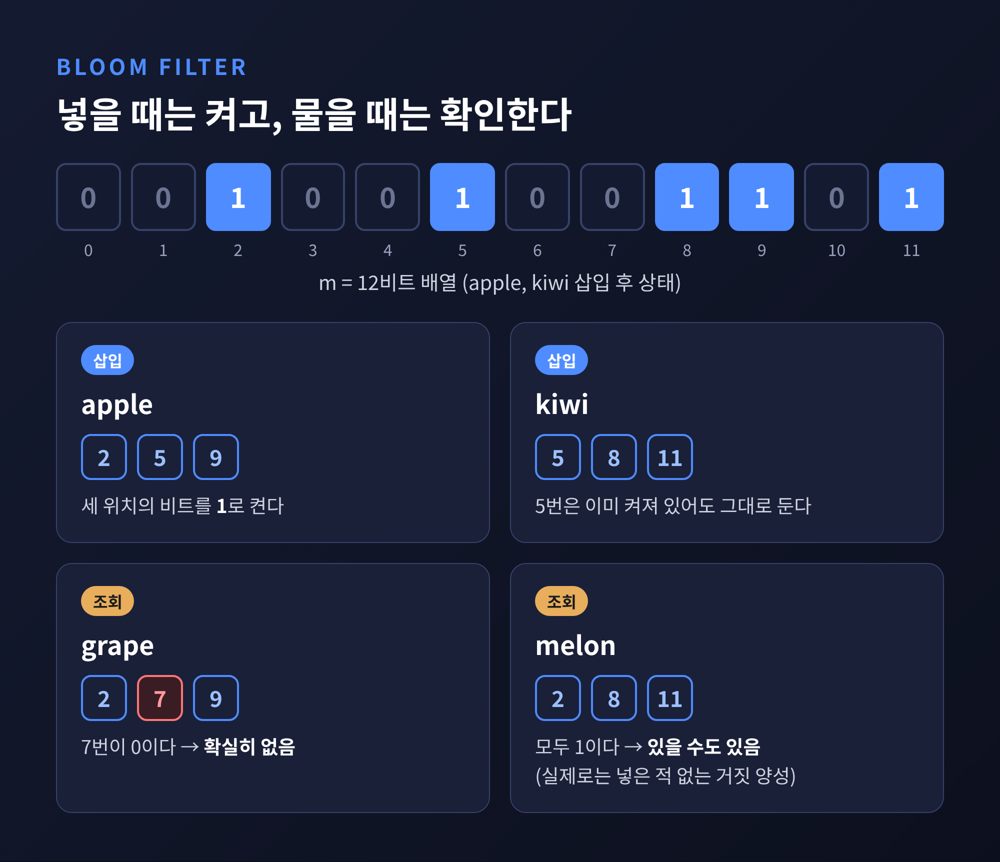
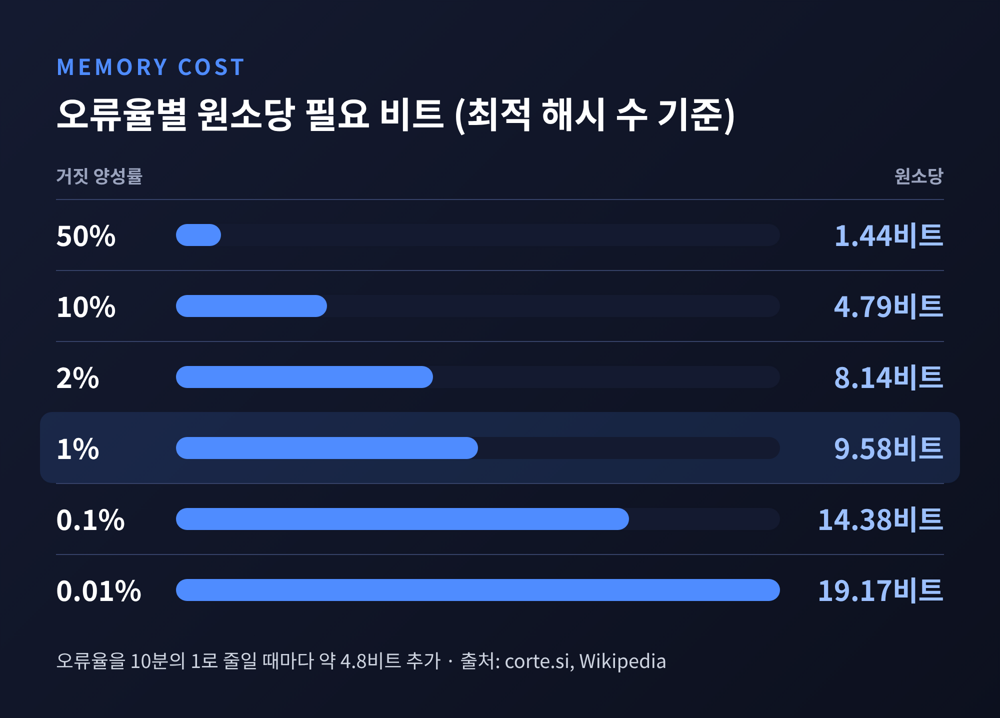
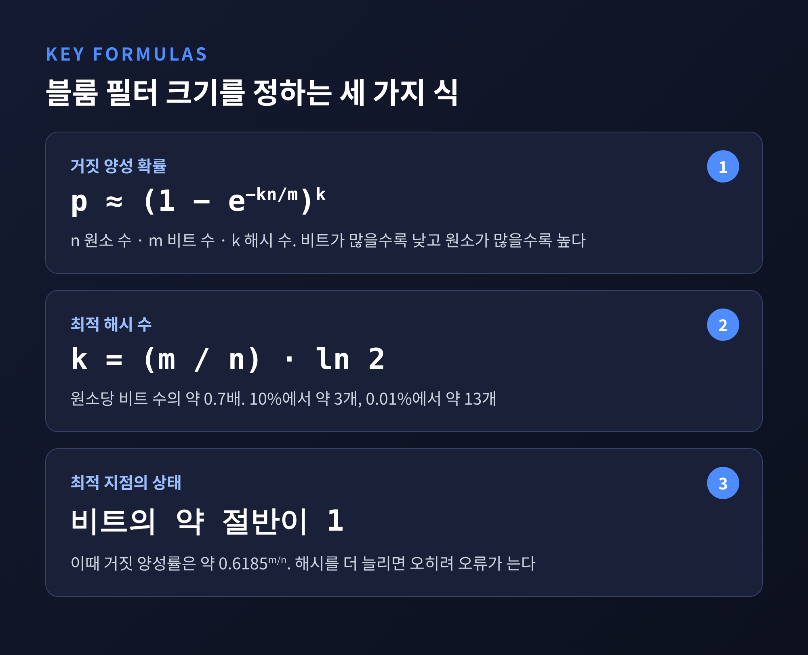
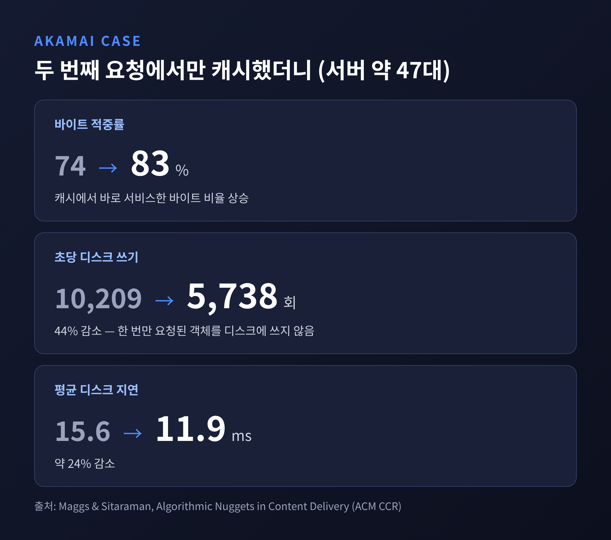
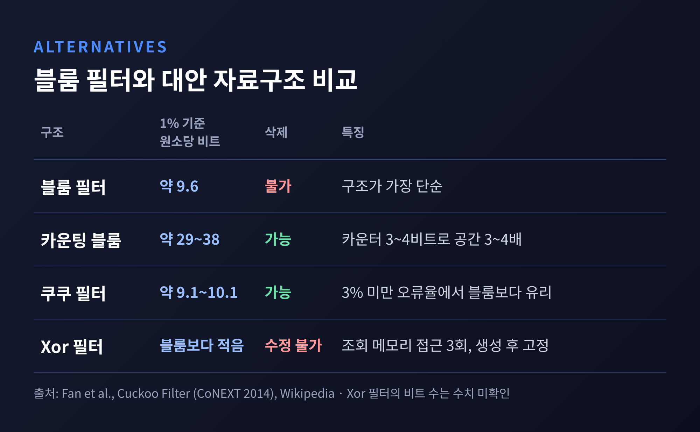

이번 글에서는 블룸 필터(Bloom filter)의 원리를 정리해 보겠습니다. 이 자료구조는 "이 값을 본 적이 있는가"라는 질문에 원소 자체를 저장하지 않고 답합니다. 대신 "없다"는 대답은 언제나 정확하고, "있다"는 대답만 가끔 틀리는 조건을 받아들입니다.
수십억 건의 데이터에서 중복 여부를 확인한다고 가정해 보겠습니다. 가장 쉬운 방법은 해시 집합에 모든 키를 넣어 두는 것입니다. 정확하지만 키가 커질수록 메모리가 그만큼 늘어납니다. 키 하나가 16바이트라고 가정하면 10억 건만 해도 16GB가 넘습니다.
블룸 필터는 이 부담을 정면으로 덜어냅니다. 1970년 버튼 블룸(Burton H. Bloom)이 발표한 논문 "Space/Time Trade-offs in Hash Coding with Allowable Errors"가 출발점입니다. 제목 그대로 약간의 오류를 허용하는 대신 공간을 아끼자는 제안이었습니다.
논문의 예시는 자동 하이픈 처리 프로그램이었습니다. 단어 약 50만 개 가운데 약 90%는 간단한 규칙으로 처리되고, 나머지 약 5만 개만 디스크에 있는 사전을 찾아봐야 했습니다. 오류 없는 일반 해시는 약 200만 비트가 필요했습니다. 반면 오류율 1/16을 허용하면 30만 비트 미만으로 줄어 주 메모리에 들어갔고, 디스크 접근은 약 84% 줄었습니다.
2026년 10월 현재, 이 아이디어는 발표 후 56년이 지났습니다. 그런데도 데이터베이스와 CDN 같은 대규모 시스템 곳곳에서 여전히 쓰입니다.
구조는 단순합니다. m개의 비트가 모두 0으로 채워진 배열과, 서로 다른 k개의 해시 함수가 전부입니다.
값을 넣을 때는 k개의 해시 함수로 위치 k곳을 계산해 그 비트를 1로 바꿉니다. 조회할 때는 같은 k곳을 확인합니다. 하나라도 0이면 "확실히 없음"입니다. 전부 1이면 "있을 수도 있음"입니다.

"있을 수도 있음"에 단서가 붙는 이유는 다른 값들이 우연히 같은 비트를 켜 두었을 수 있기 때문입니다. 이것이 거짓 양성(false positive)입니다. 반대로 한 번 넣은 값은 비트가 꺼질 일이 없으므로, 있는 값을 없다고 답하는 거짓 음성은 생기지 않습니다.
원소 자체를 저장하지 않으니 키가 16바이트이든 1KB이든 필터 크기는 같습니다. 필요한 크기는 원소 개수와 허용 오류율만으로 정해집니다.
핵심 수치는 원소당 비트 수입니다. 해시 개수를 최적으로 잡았을 때 거짓 양성률과 원소당 필요 비트는 아래와 같습니다.

1%의 오류율은 원소당 약 9.6비트면 됩니다. 오류율을 10분의 1로 줄일 때마다 약 4.8비트가 더 들 뿐입니다. 원소당 1바이트, 즉 8비트만 써도 거짓 양성은 약 2%입니다.
이를 10억 건에 대입해 보겠습니다. 원소당 9.58비트에 10억을 곱하면 약 1.2GB입니다. 같은 규모에서 오류율을 약 2%까지 받아들이면 약 1GB, 약 15%까지 받아들이면 약 500MB로 내려갑니다. 앞서 가정한 16GB 해시 집합과 비교하면 열 몇 분의 1입니다.
다만 제목의 "메모리 몇 MB"는 규모를 구분해서 읽어야 합니다. 수백만에서 수천만 건 규모라면 정말 MB 단위입니다. 1억 건에 10비트를 쓰는 필터가 약 125MB이고, Akamai 논문의 사례로는 4천만 객체를 오류율 0.1%로 다루는 데 약 68.6MB가 듭니다. 수십억 건에서는 GB 단위가 됩니다. 크기는 원소 수에 정비례하기 때문입니다.
원소 수를 n, 비트 수를 m, 해시 수를 k라고 하면 거짓 양성 확률은 대략 (1 − e^(−kn/m))^k 입니다. 비트가 많을수록 낮아지고, 원소가 많을수록 높아집니다. 이 식을 k에 대해 최소화하면 최적의 해시 수는 (m/n)·ln2, 대략 원소당 비트 수의 0.7배가 됩니다. 10% 수준에서는 3개 안팎, 0.01%에서는 13개 안팎입니다.

최적 지점에서는 비트의 절반 정도가 1이 됩니다. 블룸의 논문에서도 공간이 최소가 되는 지점으로 같은 결과를 제시했습니다. 해시 수는 많을수록 좋은 것이 아닙니다. 너무 많으면 비트가 빨리 채워져 오히려 오류가 늘어납니다.
실무에서는 속도 때문에 최적값보다 k를 낮춰 잡기도 합니다. 해시가 많을수록 조회마다 읽는 비트와 계산량이 늘기 때문입니다.
대표적인 용도는 "디스크를 읽기 전에 먼저 거르는 문지기"입니다. 구글 Bigtable은 한 tablet을 이루는 여러 SSTable을 모두 읽어야 하는데, 필터가 해당 행과 열이 없는 SSTable을 건너뛰게 해 줍니다. 논문은 적은 양의 메모리로 디스크 탐색을 크게 줄인다고 설명합니다. 존재하지 않는 행이나 열을 찾는 요청은 대부분 디스크를 건드리지 않습니다.
Apache Cassandra도 SSTable마다 필터를 둡니다. 거짓 양성 확률 기본값은 LeveledCompactionStrategy에서 0.1, 그 밖의 테이블에서 0.01입니다. 0.01로 낮추면 0.1일 때보다 메모리가 약 3배 필요합니다. 메모리가 넉넉하거나 디스크가 느리면 낮은 값을, 노드가 빽빽하거나 디스크가 빠르면 높은 값을 권합니다.
CDN에서는 쓰임새가 조금 다릅니다. Akamai가 조사한 한 클러스터에서는 이틀간 접근된 4억 개 이상의 객체 중 거의 4분의 3이 딱 한 번만 요청되었습니다. 이런 객체까지 디스크에 캐시하면 쓰기만 낭비됩니다. 그래서 블룸 필터에 접근 기록을 남기고 두 번째 요청에서야 캐시하는 방식을 썼습니다. 서버 약 47대에서 측정한 결과는 아래와 같습니다.

바이트 적중률이 약 74%에서 83%로 올랐고, 초당 디스크 쓰기는 44% 줄었습니다. 필터가 가득 차는 문제는 주·보조 필터 두 개를 번갈아 쓰는 방식으로 풀었습니다. 이 밖에 Medium의 읽은 글 제외, Firefox의 인증서 폐기 검사, Grafana Tempo의 블록 검색 같은 사례가 알려져 있습니다.
좋은 점만 있지는 않습니다. 가장 큰 제약은 삭제가 안 된다는 점입니다. 비트를 0으로 되돌리면 그 비트를 공유하던 다른 원소까지 지워져 거짓 음성이 생깁니다. 필터 크기를 나중에 늘릴 수 없고, 담긴 원소를 나열할 수도 없습니다. 해시 함수의 품질이 나쁘면 이론치보다 오류가 늘어납니다. 그리고 "있을 수도 있음"이라는 답에는 반드시 원본 저장소에서 확인하는 단계가 따라야 합니다.
공간 효율도 이론적 한계에 완전히 닿지는 않습니다. 고전적인 블룸 필터는 같은 역할을 하는 최적 자료구조보다 약 44% 더 많은 공간을 씁니다. 그래서 변형이 여럿 나왔습니다.

카운팅 블룸 필터는 비트 대신 3~4비트 카운터를 두어 삭제를 지원하지만, 공간은 3~4배가 됩니다. 쿠쿠 필터는 짧은 지문(fingerprint)을 저장해 삭제를 지원하고, 오류율 3% 미만에서는 블룸 필터보다 공간 효율이 좋다고 논문은 밝힙니다. Xor 필터는 비트 수가 더 적고 조회가 메모리 접근 3회로 끝나지만, 한 번 만들면 수정할 수 없습니다. 데이터가 계속 바뀌는지, 한 번 만들고 읽기만 하는지에 따라 고르시면 됩니다.
정리하면 이렇습니다. 블룸 필터는 정확성의 한 조각을 내어주고 공간을 얻는 자료구조입니다. 원소당 약 10비트로 거짓 양성 1%, "없음"은 언제나 확실히 맞습니다. 여기에 원본을 확인하는 2차 단계가 붙으면 대부분의 값비싼 조회를 아낄 수 있습니다.
"틀려도 되는 방향을 정해 두면, 메모리가 달라집니다."
중복 검사가 병목이 된 시스템을 만나셨다면, 먼저 이 질문을 던져 보시길 권합니다. 모든 질문에 정확히 답해야 하는가, 아니면 "없다"만 확실하면 되는가.